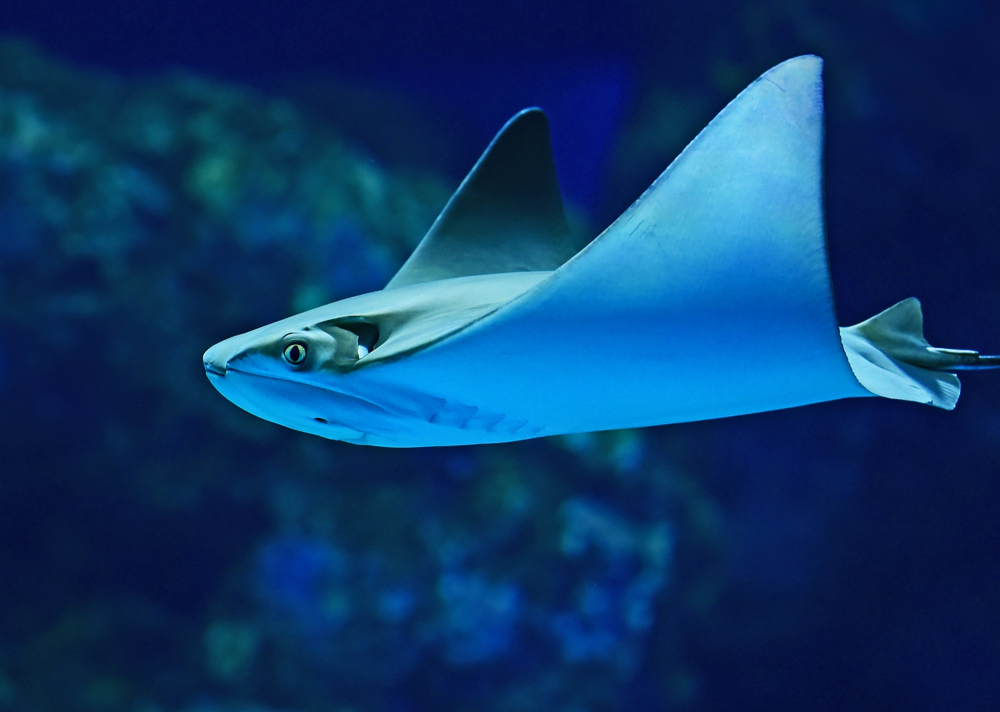

“Bütün hayvanlar birisidir. O birisi, bir hayatın sahibidir.” ve “Hayvanlara saygı göstermek, bir nezaket
meselesi değildir, bir adalet meselesidir.”
Tom Regan
Hayvanlar Alemi Blog
Eşsiz Güzellikte Hayvanlar Alemini Tanıyalım
Egzotik Hayvanlar

Deniz kaplumbağaları, egzotik dünyanın büyüleyici ve gizemli canlılarından biridir. Yüzlerce kilometre yol
kat eden bu zarif yaratıklar, okyanusların derinliklerinde unutulmaz bir yolculuk yapar. Sahillerde
yumurtlayan deniz kaplumbağaları, her daim doğanın döngüsünü temsil eder. Egzotik hayvanların benzersizliği
ve deniz kaplumbağalarının büyüsü hakkında daha fazla bilgi edinmek için web sitemizi keşfedin. Onların
zarafeti ve dayanıklılığı sizi büyüleyecek!
Egzotik Hayvanlarla Tanışın...
Vahşi Hayvanlar

Aslanlar, vahşi doğanın en ikonik ve etkileyici sakinlerinden biridir. Güçlü yeleleri ve muhteşem
kükremeleriyle savanaların kralı olarak tanınırlar. Bir aslan sürüsünün işbirliği içinde avlandığını ve
kendi aralarındaki güçlü bağları gözlemlemek, vahşi dünyanın karmaşık ve büyüleyici yönlerini açığa çıkarır.
Bu eşsiz yırtıcıların yaşadığı heyecan verici maceraları keşfetmek için web sitemize göz atın. Vahşi doğanın
kalbine bir yolculuğa çıkın!
Vahşi Hayvanlarla Tanışın...
Su Altı Hayvanları

Su altı dünyası, büyüleyici ve rengârenk yaşam formlarını barındırır. Balıklar, bu dünyada yer alan sayısız
harikadan sadece birini temsil eder. Denizlerin derinliklerine inip balıkların gizemli yaşamını keşfetmek
için web sitemizi ziyaret edin. Balıkların ilginç dünyasına dair aşağıdaki ayrıntıları öğrenmek için okumaya
devam edin:
Hazırsanız, su altının derinliklerine dalın!
Evcil Hayvanlar

Evcil hayvanlar, evimizin neşe kaynağı ve en sadık dostlarımızdır. Kedi ve köpekler, bu sıcak bağın en güzel
örneklerindendir. Web sitemizde, kedilerin zarif hareketlerinden köpeklerin coşkulu oyunlarına kadar her
şeyi bulabilirsiniz. Evcil hayvanların dünyası hakkında daha fazla bilgi edinmek için okumaya devam edin:
- Sadakat ve Sevgi: Köpekler, sahiplerine karşı sadık ve sevgi dolu davranışlarıyla tanınır.
- Bağımsızlık ve Zarafet: Kediler, bağımsızlıkları ve zarif hareketleriyle dikkat çeker.
- Bakım ve Eğitim: Hem kediler hem de köpekler, doğru bakım ve eğitimle evinizin değerli bir
parçası olabilir.
Kedi ve köpeklerin ilginç dünyasını keşfetmek için web sitemizde daha fazla bilgi bulabilirsiniz.
Hazır mısınız? Evcil hayvanlarla dolu bir dünyaya adım atın!
Sürpriz Kutusu Tıkla ve Gör
Buradaki Hayvan Sana Şans Getirsin

- Hayvanları Sev!
- Onlarla Hayatı Paylaş
- Dünya Onlarla Güzel